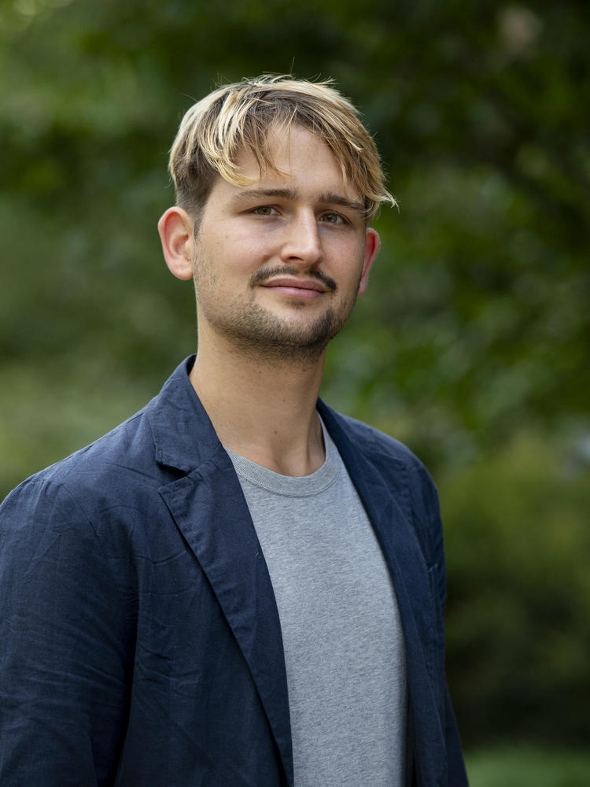

Historical Anthropologist & Sociologist
Kristóf Nagy is a historical anthropologist and sociologist specializing in the cultural politics of contemporary far-right governments. With a background in art history from the Courtauld Institute of Art and a Ph.D. in social sciences from Central European University, his research explores the intersections of imperialism, cultural infrastructures and far-right culture wars through ethnographic and historical methods.
As a Fung Global Fellow at Princeton University in 2025/2026, he is developing his first monograph on far-right cultural policies and their global historical connections, centering the case of Hungary as a laboratory for contemporary culture wars. For seven years, he has edited Fordulat, a journal of left social theory.

Princeton, 2025/26